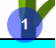

Instrucciones
Haz click en cada uno de los puntos de la imagen para ver su descripción. Una vez visualizado el interactivo, realiza el test de conocimientos.

Haz click en cada uno de los puntos de la imagen para ver su descripción. Una vez visualizado el interactivo, realiza el test de conocimientos.